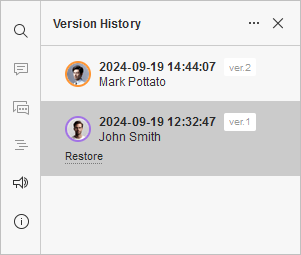

Istorija verzija
Presentation Editor vam omogućava da održavate stalni timski pristup toku rada: delite datoteke i fascikle, sarađujete na prezentacijama u realnom vremenu, komunicirate direktno u editoru, komentarišete određene delove prezentacija koji zahtevaju dodatni unos trećih strana.
U Presentation Editor-u možete pregledati istoriju verzija prezentacije na kojoj sarađujete.
Pregled istorije verzija:
Da biste videli sve izmene napravljene u prezentaciji,
- idite na karticu Datoteka,
-
izaberite opciju Istorija verzija na levom bočnom panelu
ili
- idite na karticu Saradnja,
- otvorite istoriju verzija koristeći ikonu Istorija verzija na gornjoj traci sa alatkama.
Videćete listu verzija i revizija prezentacije sa naznačenim autorom svake verzije/revizije, kao i datumom i vremenom kreiranja. Za verzije prezentacije, naveden je i broj verzije (npr. ver. 2).
Pregled verzija:
Da biste tačno videli koje su izmene napravljene u svakoj pojedinačnoj verziji/reviziji, možete pregledati željenu klikom na nju na levom bočnom panelu. Izmene koje je napravio autor verzije/revizije biće istaknute istom bojom kao i njegov avatar u prozoru za pregled istorije verzija.
Da biste se vratili na trenutnu verziju prezentacije, koristite opciju Zatvori istoriju na vrhu liste verzija.
Vraćanje verzija:
Ako je potrebno da se vratite na neku od prethodnih verzija prezentacije, kliknite na vezu Vrati ispod izabrane verzije/revizije.

Da biste saznali više o upravljanju verzijama i međurevizijama, kao i o vraćanju prethodnih verzija, pročitajte sledeći članak.